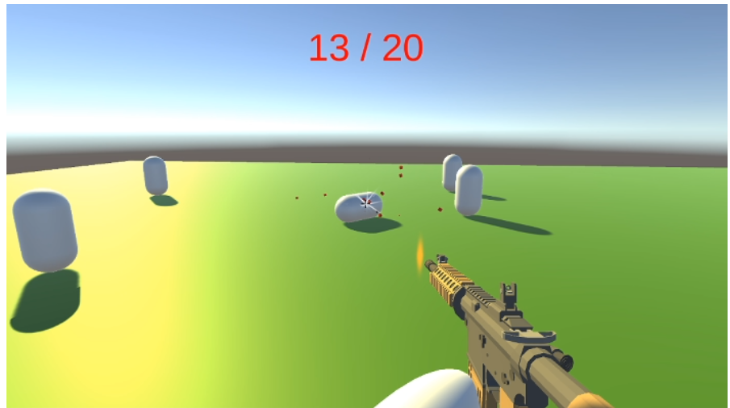

FPSheesh
Player Movement

We want the player to be drawn to the movement of the game.
It will be fast moving, and as smooth as possible avoiding collisions and making every surface usable.
To move we will apply force to the players so that we avoid buggy collisions.
First Defense :
As Character movements and Gunfire are two essential parts of the project that had to be 90% done for the first defense, as many features as possible were implemented. Our character is able to move, jump, crouch, run.
With the addition of the gunfire, he is also able to shoot and inflict damage to his opponents.
To achieve all this, as it was the first time Valentin was using unity for a project like this, he helped myself to many tutorials on Youtube in order to diversify the available features as much as possible.
So, the weapons have different characteristics that can vary like the damage, the range, the fire rate, the spread of the bullets and the size of the magazine.
However the design and the graphical aspect of the characters and the weapons are not as advanced, considering that the technical aspect is more important for the moment although it will not be neglected in the continuation of the project.
To make the game a bit more realistic, he added bullets and particle effects, including a muzzleflash and an impact animation. The muzzleflash simulates an explosion at the end of the gun barrel when shooting and the impact animation lets the player know if he hit an opponent.
To make the game more enjoyable for the player, he also added a crosshair to help with aiming as well as an indicator of the amount of ammo left.

Second Defense :
For the character Valentin reorganized all the code to make it more readable and conducive to group work.
He also added a life bar and the possibility to kill other players in the room.
Similarly, he reorganized the gunfire to make it more efficient and accurate. So we now have a 90\% ready character able to move smoothly and shoot accurately.
The management of equipped items has also been revised in order to simplify the management of classes in the future. So Valentin has mainly worked on optimizing the features that we had already developed.
Finished Product :
First, he started by reorganizing the characters, especially in terms of their size, which was not well adapted to Bede maps. Indeed, their hitbox was badly adjusted and caused many collision bugs against walls and floors. Now, the movements are more fluid and the player can't go through them anymore.
He also added a HUD that gives all the info to the players especially about his remaining life, remaining ammo and the cooldown of his abilisheesh.
Now it all work smoothly.